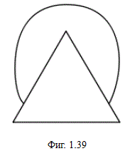

Беседа 2891 от 3877 · Беинса Дуно
Господарят
Отче наш.
Какви бяха положенията на миналата лекция?
Тема имате ли зададена? – /Нямаме./
Напишете върху „Произходът на пеперудите“. Доста труден въпрос. Ако ви се каже, от какво произхожда грехът, напишете веднага. От какво произлиза грехът? Ева яла от ябълката и грехът влязъл в света. Но как се скри грехът от ябълката? Как стана Ева от двете ребра на Адама? Въпросът е свързан с друг, как стана света? Господ каза, и стана всичко туй. Но работата е там, че много пъти вие като кажете, че тази къща я направи Иван, ни най-малко Иван не я направил. Тази къща е на Петко Стоянов. Нито той е направил, нито камъните донесъл. Други са направили къщата. Той минава за господар. И у човека има една такава добродетел. Казвате: „Много добър човек“. Той е толкова добър, колкото Иван е господаря на къщата. Той е, казва, лош. Толкоз е лош, колкото господарят на къщата. Човек постъпва някой път зле, но не показва, че е лош, или че постъпва някой път добре, не показва, че е добър. Допуснете, че един човек яде сладко. Той сладък става ли? Или, че яде горчиво. Той става ли горчив? Значи едновременно човек съзнава, че яде сладко, прави такова впечатление на вкуса. Като яде горчивото, съзнава, че яде горчивото. Ж дадения случай не може да си даде отчет, защо е попаднал на сладкото или на горчивото. Допуснете, че има нещо, за което казвате, че не може да мислите, а пък има нещо, за което може да мислите. Едни са лесни, други са мъчни. Представете си, че вие си убодете или ръката, или крака, някой трън влезе във вашата ръка. Веднага не може да се освободите от тази мисъл, веднага мислите за този трън. Макар, че не обичате тръна, мислите заради него. Мислите ли, че тази мисъл е принудителна или доброволна. Понякой път вие казвате, че човек за злото дава повече време отколкото за доброто. Да кажем, ако вие се убодете през целия ден вие ще дадете всичкото време само за тръна да мислите.
Сега, запример, при самовъзпитанието, всички трябва да дадете един начин на самовъзпитание. Има едно правило, казвам ви понякой път, вие трябва да го прилагате. Да допуснем, че си недоволен, чети от 1 до 10. Ако не ти минава чети до 100. Ако още остане, чети до 1000. Като прочетеш до 1000, тогава кажи, каквото ще кажеш. То е една спирачка за вас, бързореките. Има хора бързореки, понеже наклонът е много /голям/, че той не може да спре. Съвременните автомобили имат доста спирачки. Представете си, че с един голям автомобил пътувате, но знаете ли каква голяма опасност седи със слизането на този автомобил някъде, ако се развалят спирачките му. Иска този шофьор да спре автомобила, не може да спре. Какво ще стане с вас, ако сте вътре? Сега вие ще кажете: „Какво отношение има автомобилът?“ Вие сте един автомобил, имате спирачки. Запример, има спирачки за говора. Много говориш, някой голям наклон е. Завърти малко спирачките, за да не върви бързо автомобилът, понеже има завой. Някъде, в някой завой, може и ти да идеш, дето не трябва. Или кажеш някоя дума, която не трябва. А пък в природата за всяка една дума се плаща. Данък има турен. Кажеш някоя дума, отбелязва се. Като в съвременните коли, някой пътник като стъпи в колата, отбелязва се вътре, автоматически се отбелязва, колко пътници минават и държат отговорен кондуктора. Ако липсват пари казват: „Къде отидоха?“ Ако някой не е турен, тъй е написано. Ако някой се ухитри, може да се ухитри. Разправят един анекдот в Америка. Колко е верен не зная. Препоръчват една машина, която да отбелязва електрическата енергия, която се изразходва за осветлението. Автоматически туриш една монета, веднага ще ти даде толкоз осветление. Обаче в машината забелязват, че се гори енергия, а парите ги няма там. Турени са парите, а парите ги няма. Как са извадени не знаят. Да има насилие на машината, няма. Машината дава енергия, горят /лампите/, парите са турени, но парите ги няма. Компанията решила да открие въпроса. Гледат никакво насилие няма. Искат да знаят къде са се дянали парите. Най-после решават да открият този човек и ако не го открият цялата компания пропада. Той направил пари от лед, със същата големина като американските монети. Тури ледената монета, тя се стопи. Като влезе в машината даде електричество. Значи колко изобретателен е бил този, направил монети от лед. Онзи, който създал машината му дошло на ум. Тури ледената монета и тя вече дава енергия, а парите ги няма. Откриват къде отиват парите. Стопявали се парите.
Та понякой път и вие давате енергия на тия ледените парички. И вие разрешавате енергия, но парите ги няма.
Казвам: Да проучавате себе си в дадения случай. Вие се възбудите, някой път ставате меланхолични, не сте разположени. Някой път се докачите, че ви обидил някой. Някой път се обезверявате, някой път надеждата отслабва, някой път вярата отслабва, несправедливи много работи, но не знаете откъде. Туй, което става във вас, не му знаете произхода. Че сте се разгневили, знаете го, но кои са причините за разгневяването. Казвате: „Той ме предизвика“. Ако някой ви предизвикал, значи много близо сте минали при него. Може ли да ви предизвика някой човек, от когото сте минали на два километра до него? Но, ако сте минали край него, че сте го блъснали, веднага той ще ви каже нещо. Та в съвременния живот, сблъскват се хората за някаква идея. Как ще си обясните? За някаква идея, то е един научен въпрос. Вие четете, че до слънцето има 92 милиона мили. Вие го вземате това за един факт. Друг казва, последните научни изследвания, казват че е 93 милиона мили. Тия неща вие ги вземате за научни данни. Дойде някой каже: „Този човек е много добър“. Вие веднага го приемете, че е много добър. По какво се познава добрия човек? – Познава се. То е само за обяснение.

Да кажем имате две очи. Защо ви са две очи, може с едно. Имате две уши. Ако ви зададат тема, защо човек има две уши, какъв отговор ще дадете? Аз не искам сега да ми давате отговор, но мислете върху това. Туй, което възприемате с едното око и което възприемате с другото око, не е едно и също. Има хора, които с едно око гледат. Мислите ли, че хората, които с едно око гледат са такива, както хората, които схващат с две очи? Насекомите имат повече очи. Някои имат 2, някои 3, 4, 10, 15 и по 100 очи имат. Ние сега идваме до човешките очи. Тогава да ви запитам: Кои са съображенията на природата, че направила две очи? В дадения случай по-хигиенично е с две очи, повече светлина възприема. Казвам: Онзи закон, който стимулира в съзнанието, туй което отвън съществува, то е произведение от някаква вътрешна причина, разумна причина, която е съществувала някога. Очите са произлезли от по-скоро време. Било е време, когато много същества са нямали очи. Значи, очите схващат ония трептения на светлината. Ушите схващат ония трептения на въздуха. Носът схваща ония трептения на какво, на частиците, които цветята отделят от себе си. Всеки предмет отделя нещо от себе си и обонянието, носът, схваща тия частици, които се отделят. С какво се занимава, какво схваща тя? Устата схваща ония предмети, които храните съдържат. Тогава, ако попитате, какво е отношението на сетивата? Кое сетиво е започнало най-първо у човека? С осезанието. Второ сетиво е вкусът, трето – обонянието, четвърто – окото и пето – ухото. Значи, всички хора вярват в осезанието, понеже е най-старо. Казва: „Ти попита ли го, ти схвана ли това нещо?“ Тогава една мисъл ние в съзнанието ни може да усетим. Мисълта може да я усетиш, след това тази мисъл може да я вкусиш, може да видиш, какво отлъчва от себе си. Най-после трептенията, които те излъчват, които излизат, идат от един малко по-висш свят. Ще познаваш нещо. Някои хора познаваш по говора. Някои хора ги познаваш по образа. Някои хора ги познаваш по онова, което излъчват от себе си, а някои хора ще ги вкусиш. Та несъзнателно по пет начина може човек да се изследва. Като го пипаш ще видиш дали е топъл или горещ, или е студен. Какви качества ще различите с вкуса? Сладък ли е или е горчив. С носа си ще видите благоухае или не. Както цветята познавате по тяхната миризма, така и човек се познава по миризмата. Същият закон. Много пъти някой човек го познавате какъв цвят е, по онова ухание, което издава от себе си. Най-после звукът, по неговия говор, онова което говори, схващате го. Гласът мек или груб. Най-после ще схванете неговите черти какви са и от това вие правите известно заключение, какъв е. – /Интуицията на какво се дължи?/ – Интуицията е едно установено чувство на минала опитност. То е едно установено чувство. Малко погрешки стават. Ти с интуицията схващаш един човек как ще постъпи след 10–15 години, или за далечното бъдеще как ще постъпи. Или с интуицията ти може да видиш какво ще бъде твоето бъдеще. Значи то е един далекоглед, който открива световете, които за обикновеното съзнание са непонятни, отдалеч вижда пътищата. Но интуицията се дължи на вашето знание на човека, което в старите времена са наричали сърцето. Всички ония, които имат много тънки вежди, в тях интуицията е по-развита, отколкото онези, които имат дебели вежди. В хората с дебели вежди интуицията е слабо развита. В хората с тънки вежди интуицията е по-силно развита. Сега има степени на тънки вежди. Вземете тънките вежди направени от един конец са тънки, от две са средни, от три са дебели. Аз вземам три жички, първата жичка тънки, втората – средни, третата – дебели. Зависи и от дължината на косъма, които образуват тия вежди, и те играят рол. И те трябва да бъдат тънки. Сега защо природата турила веждите на човека? Граница са те. Веждите са антени. Тънките вежди схващат късите вълни, надалече виждат. С дебелите вежди схващат дългите вълни, наблизо. Този, който има дебели вежди, само за ден познава работата как е. Той като види слънцето знае добър ли ще бъде денят или не. Но за утре, той не може да предскаже. Но онзи, който има интуиция, който е с тънки вежди, с един конец за една година и за две години, и за десет години надалече схваща. Сега вас ви интересува каква е вашата интуиция. Вие за колко години схващате? Нали някои от вас сте ходили при някоя врачка? Всички врачки гадатели се стремят да развият това чувство. В зачатък има във всинца ви, само че в някои не е развито. Нещата може да се развият, както една пъпка. Виждаш една малка пъпка, но тази пъпка трябва да се развие, да цъфне, да видиш каква е в същност. Може да кажеш, че интуицията е един цвят, който цъфти. С тънки вежди е цвят. Онзи с дебелите вежди е пъпка. Те са вече в материалния свят. Хората с дебелите вежди живеят на физическото поле, интересуват ги близки работи. Бъдещето тях не ги интересува.
Та казвам: Вие сте се преобразили. Природата турила пет пръста на едната ръка и пет пръста на другата ръка. Твърдения могат да се направят така, ако пръстите на дясната ръка са по-добре развити, туй показва, че неговият ум е по-добре развит. Ако пръстите на лявата ръка са по-добре развити, туй показва, че неговото сърце е добре развито. Ако пръстите на лявата и на дясната ръка са еднакви, оказва, че и умът и сърцето са еднакво развити. Ако има различие в строежа на пръстите, както са построени, показва и различие в силите, които са работили. Вземете научно каква е дължината на пръстите. Колко сантиметра е дълъг единия пръст? Един пръст може да има 7, 8 сантиметра или може да има 12, 13, 14 сантиметра от горната страна. Може да ги мерите и от долната страна. Отгоре, ако мерите, показва активността на човека каква е. Отдолу, ако изследвате, ще намерите чувствителността на човека каква е. Отдолу ръката показва неговата възприемателна сила, каква е неговата способност. Ако отгоре мерите, ще знаете каква е активността, с какви сили той разполага. И тогава в първият пръст научно се показва, ако разгледате корена, първата част на пръста, основата показва, каква е стомашната система. Коренът на пръста показва състоянието на стомаха. Средната част показва състоянието на дробовете, горната част показва състоянието на вашия мозък. Че като си погледнете пръста може да си направите диагноза. Като погледнете корена на пръста ще знаете, какво е състоянието на стомаха. Те са научни работи, които едва сега ги прозирате. Никой още досега не е правил диагноза на стомаха си по пръстите. Тогава, ако ви боли стомаха ще разтривате корена на пръстите си да се лекувате. Ако ви болят гърдите ще разтривате средната част. Ако главата ви боли ще разтривате крайната част на пръстите. Цяла медицина е това. Много мъчно е да знаеш как да разтриваш. Изкуство е да разтриваш. Трябва да знаеш. В разтриването, ако натиснеш повече ще имаш един резултат, ако натиснеш малко, ще имаш друг резултат. Казвам: Вие имате ръцете и не знаете защо Господ създал ръцете ви. Ръката ви е ваш диплом даден. Лявата ви ръка е диплом на сърцето ви, в дясната ръка имате диплом на ума ви. Като погледнеш да видиш какво си учил. Всичките бележки са турени. Бележка има за всичко: в какво състояние е сърцето, в какво състояние е умът, животът ви какъв е, как сте постъпвали, цяла една книга. При кой господар сте служили, се ви е дал служебно, тъй щото, като сте ходили в Божествения свят, имате документ. Като отидеш някъде ще кажеш: „Колко ми даваш за ръцете, колко ме кредитираш?“ Някой, като дигне ръката само за сто лева го кредитират, някой за десет, някой за нищо. Рядко се случва някои хора, като си дигне ръката да струва 100 лева, някой струва 1000 лева. Представете си, ако някой виден философ тури ръката си, отпечати върху вашата /дреха/, няма ли дрехата да има цена? Този отпечатък има цена и всички искат да купят дрехата ви. Ако някой обикновен човек си отпечати ръката, никой не се интересува.
Казвам: Всичките велики съзнания, всичките велики хора в света, всяко едно същество оставя известен отпечатък върху човека. Когато Бог направил човека, минал край човека, Той отпечатал ръцете си върху него. Направи Бог с ръцете човека. Онези, които носят двете ръце на Господа в себе си, то е едно голямо щастие, но някои са изтрили, оцапали са тия ръце, не са пазили тия ръце, та намалява се цената. В природата има един закон: Богатството ние го носим в себе си. Онзи, който носи двете ръце на Господа в себе си, той е гениален човек. Сега вие казвате, че Господ направи човека. Щом го направил Той ще остави известен отпечатък. Човек е минал през всичките планети. Този пръст, средният се е образувал, когато човек е бил на Сатурн. Първият пръст е бил образуван, когато човек е бил на Юпитер. Третият пръст е образуван, когато човек е бил на Слънцето. Четвъртият, кутрето, когато човек е бил на Меркурий. Де се намира в хиромантията венерината област? Когато той минавал през Венера се е образувала материалната страна на човека. Сега разбира се това е един философски въпрос. Има същества, които са излязли от слънцето преди планетите да са излязли. Слънцето било цяло в себе си. Вземете туй пространство. Какво е разстоянието на слънцето до най-крайната планета? Какво е разстоянието до Нептун? Някои от вас, които са изучавали астрономия, може ли да кажете? Предполагам около 4 милиарда километра. Когато слънцето, тази материя, завземала туй пространство, имало същества, които тогава са излезли от слънцето. Когато слънцето започнало да се сгъстява, да се отделят всичките крайни планети, във вид на кръгове, има същества, които са излязли по после. Първите същества се отличават от вторият кръг, от третия, от четвъртия, от петия и от най-последния.
Те са далечни работи само за разсъждение, за въображението. Онези от вас, които искате да станете поети, поетическите работи ви интересуват. Някои от вас искате да станете художници, за обикновения живот не се интересувате. Когато човек е краен материалист, той е в кръга на земята. Рабиндранат Тагор, той е много наблюдателен. Вземете неговата поезия. Той пише много обективно. Няма нищо отвлечено, че мистично, то са много материалистични описания. Говори за възлюблената, както на земята. Тъй го описват, както го схващат простите хора. Той говори за възлюбленият как е облечен. Той е много обективен, не че няма никаква интуиция. В индусите има метафизика, но те са философски системи, които те са създали. Интуицията е вън от нашето схващане.
Сега до заключението. Какво заключение да се даде? Бъдещето на човека зависи от онова, което е вложено в него. Никога не се старайте да придобиете онова, което не е ваша силна черта. Разчитайте в дадения случай на най-силните способности. Разчитайте на най-силните си чувства. Под думата „най-силни чувства“ разбирам има един живот. Ние говорим някой път за съзнанието, но в съзнанието има степени. Има съзнание, но и животните имат съзнание, но и човек има съзнание, но и ангелите имат съзнание. Но съзнанието на животните се различава от съзнанието на човека. Съзнанието на човека се отличава от съзнанието на ангела. И в ангелите има самосъзнание, но не както в човека. Ние имаме съзнание понякой път, угризение за погрешките. Когато в ангелите има самосъзнанието какво трябва да направят? Самосъзнава той в себе си какво добро може да направи и как може да се развие. Човек съзнава онова, което не е направил, погрешките. Съзнанието на ангелите е във възходяща степен. Съзнанието на човека е във възходяща степен. Ти виждаш своето минало.
Та казвам: Ние в самосъзнанието се стремим към възходящото съзнание, да се очистим от миналите погрешки, да започнем да мислим какво трябва да направим. Съзнанието трябва да дойде до свръхсъзнанието, ще го кредитират. Свръхсъзнанието, то са великите блага, от които той безрезервно ще черпи. Значи има един велик за/кон над/ нас. Сега кредитът е ограничен. И да искаш да направиш нещо, не те кредитират. Ако попиташ защо не те кредитират, защото и да те кредитират, нищо няма да направиш, знание нямаш, сила нямаш, воля нямаш, устой нямаш. Не, че това е слабост, но тия работи трябва да се придобият.
Казвам: Най-първо във вас трябва да стои самосъзнанието. Вие сте дошли до положението да оценявате онова, което Бог е вложил във вас. Трябва да оценявате. Някой от вас казва, че този живот, който ви е даден, вие сте недоволни от живота. Тогава вие ще се намерите в положението на магарето, което едно време Господ му дал една много малка форма. Между всичките животни магарето било най-малко. Като ги видяло, всичките били грамадни, хубаво облечени, то нищожничко, казва: „Нищо не струвам, на какво мязам? Господ на тях всичко дал“. Започва да моли Господа да му измени формата, да му даде един глас да знаят, че съществува магарето. Другояче няма да бъде видно. Този разказ гласи, че Господ послушал магарето, глас му дал. Сегашните магарета с дългите уши са гласовити. За първи път като заревало, всички го слушали. После видели, че умът му не му достига толкоз, хванали го един ден и го турили за пазач на градината. Птичките като кацали, тичало да изгони тази птичка, да изгони онази птичка, изтъпкал цялата градина. Изпъдили го из градината. И досега магарето е изпъдено, понеже не знае как да пази. Магарето станало прозвище. Каквото и да направи, казва: „Магарешка работа“. Значи необмислена работа.
Когато тази история била създадена, анекдотът гласи, че магарето било виден философ. Това магаре взело много трудни задачи да развива, като не могло да ги развие, затова магаре станало. Сега магарето казва тъй на хората: „Не решавайте трудните въпроси, които не ви се падат“. Що е магарето? – Не се ангажирай с въпроси, които не са за тебе. Нищо повече.
Само, че магарето има най-добрите научни данни за водата. Човек, който иска точни данни за водата, магарето ще му даде верните данни.
Само светлият път на Мъдростта води към Истината!
В Истината е скрит животът!
ХVII година
39 лекция на Младежкия окултен клас
държана от Учителя на 9. IХ. 1938 г., петък, 5 ч.с.
София – Изгрев.